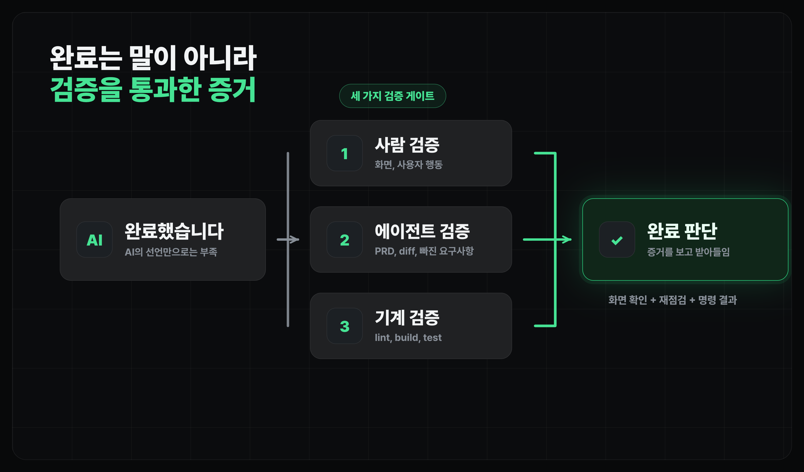

에이전틱 워크플로우
검증 고도화하기
AI의 완료 선언을 기계·에이전트·사람 세 겹으로 검증하는 방법
얻어갈 것
- 검증을 기계, 에이전트, 사람 세 겹으로 나눠서 봅니다.
- 정적 검사와 테스트로 기계 검증을 만들고, 에이전트에게 코드 점검과 실행 확인을 맡깁니다.
"완료했습니다"는 증거가 아닙니다
- 화면이 실제로 뜨는지, 데이터가 제대로 저장되는지는 다른 문제입니다.
- 그래서 검증은 개발의 마지막 장식이 아니라, AI가 만든 결과를 진짜 제품으로 받아들일지 판단하는 단계입니다.
계획하고 구현하기에서 정한 완료 조건을 여기서 증거로 확인합니다.
검증은 세 겹으로 봅니다
검증을 한 사람이 한 번 훑어보는 일로 생각하면 금방 지칩니다. 대신 세 겹으로 나눠서, 싸고 자동인 것부터 돌립니다.
- 기계 검증: 테스트 코드, lint, build처럼 명령 한 줄로 돌아가는 확인. 빠르고 매번 똑같이 실행됩니다.
- 에이전트 검증: 코드를 직접 읽어 PRD대로 구현됐는지 보고, 실제로 돌려서 동작까지 확인합니다.
- 사람 검증: 의도대로 됐는지 최종 판단. 화면을 직접 열어 사용자가 할 행동을 해봅니다.

이렇게 나누면 사람은 마지막 판단에만 집중할 수 있습니다.
기계 검증: 정적 검사와 테스트
기계 검증은 명령 한 줄로 끝나고 매번 똑같이 돌아갑니다. 두 가지를 기본으로 씁니다.
정적 검사 - lint·타입 체크·build
정적 검사는 코드를 돌리기 전에 오타, 타입 오류, 빌드 실패를 잡습니다.
- 우선 모든 정적 검사를 통과해야 합니다.
- 빨간 줄이 하나라도 뜨면 그 위는 볼 것도 없이 거기서부터 고칩니다.
테스트 - 자연어 조건을 코드로
테스트는 자연어 성공 조건을 코드로 박아둔 안전망입니다. 먼저 "무엇이 맞으면 성공인지"를 적어봅니다.
- 새 게임을 시작하면 점수는 0점이어야 합니다.
- 블록이 왼쪽 벽에 닿아 있으면 더 왼쪽으로 움직이면 안 됩니다.
- 한 줄이 가득 차면 그 줄은 사라지고 점수가 올라야 합니다.
위 조건은 대략 아래처럼 코드 형태의 검사로 바뀝니다.
test("새 게임을 시작하면 점수는 0점입니다", () => {
const game = createNewGame();
expect(game.score).toBe(0);
});
코드를 못 읽어도 괜찮습니다. 내가 적은 조건이 빠짐없이 테스트로 들어갔는지, 그게 통과하는지만 보면 됩니다.
에이전트 검증: 코드를 읽고, 직접 돌려보기
기계 검증이 통과해도 PRD 누락이나 빈 구현은 남을 수 있습니다. 이건 에이전트에게 두 갈래로 맡깁니다.
코드를 읽혀서 점검하기
테스트가 전부 초록불이어도 요구사항을 반만 구현했거나, 통과만 하고 속은 빈 껍데기일 수 있습니다. 그래서 변경을 만들지 않은 에이전트에게 PRD와 diff를 주고, 코드를 직접 읽으며 점검하게 합니다.
- PRD 완료 조건 중 코드에 실제로 들어간 것과 빠진 것.
- 요구한 적 없는데 슬쩍 바뀐 부분이나 위험한 변경.
- 테스트는 통과하지만 실제 동작은 비어 있는 구현.
사용자처럼 테스트하기
읽어서 맞아 보여도 실행하면 깨질 수 있습니다. 에이전트에게 로컬 화면을 열고 주요 흐름을 눌러보게 합니다.
- 사람이 매번 손으로 누르던 시나리오를 에이전트가 대신 돌립니다.
- 로그인, 결제, CAPTCHA처럼 사람이 직접 처리해야 하는 구간은 에이전트가 멈추고 요청하게 두면 됩니다.
브라우저 검증은 이 수업에서 Playwright CLI를 기본으로 씁니다.
Playwright CLI
- Playwright는 가장 유명한 브라우저 자동화 도구입니다.
playwright-cli를 한 번 설치해 두면 Claude Code든 다른 코딩 에이전트든 같은 방식으로 브라우저를 조종합니다.
설치도 에이전트에게 맡기면 됩니다. 아래 P2처럼 가이드대로 설치와 skill 연결까지 시킨 뒤, --help가 되는지만 확인하면 준비 끝입니다.
playwright-cli를 설치해줘. https://github.com/microsoft/playwright-cli 가이드대로. - 전역 설치: npm install -g @playwright/cli@latest - skill 연결: playwright-cli install --skills - 설치가 완료되면 CLAUDE.md에 브라우저 검증인 playwright-cli를 쓰라고 추가해줘
설치가 끝나면 평소처럼 자연어로 시나리오만 주면 됩니다. "localhost:3030의 장소를 리뷰하는 흐름을 테스트하고, 실패하면 스크린샷을 찍어줘"처럼 부탁하면 에이전트가 알아서 명령을 골라 돌립니다.
Claude in Chrome
- Claude in Chrome은 클로드 코드에서 크롬에 접근할 수 있도록 돕습니다.
- 크롬 익스텐션을 설치하고 로그인을 해두면, Claude Code에서 해당 크롬에 접근하여 명령을 수행할 수 있습니다.
verify 스킬로 한 번에 돌리기
위 검증들을 매번 직접 고르지 않아도 됩니다. vibe-engineering의 /verify 스킬에 맡기면 바뀐 범위를 보고 필요한 단계만 골라 돌린 뒤, 증거와 판정만 돌려줍니다.
- Level 1 정적: lint, 타입 체크, build, 콘텐츠 검증처럼 명령 한 줄로 끝나는 확인.
- Level 2 동작: 단위·통합 테스트, smoke 스크립트.
- Level 3 런타임: 브라우저·API·DB·로그로 실제 동작 확인. 브라우저는 위에서 설치한 playwright-cli를 씁니다.
- Level 4 적대적: 변경이 크거나 위험할 때만 켜는 한 겹 더. 바로 아래에서 설명합니다.
큰 변경은 적대적으로 한 번 더
변경이 작으면 여기까지로 충분합니다. 하지만 변경이 크거나(여러 파일·수백 줄), 권한·결제·데이터 삭제처럼 한 번 틀리면 위험한 부분이라면, 만든 에이전트가 스스로 "잘 됐다"고 하는 말을 그대로 믿기 어렵습니다.
- 이때는 변경을 만들지 않은 다른 에이전트에게 "맞는지 확인해줘"가 아니라 "틀렸다는 걸 찾아봐"라고 시킵니다.
- 구체적인 반례(어떤 입력에서, 어느 파일 몇 번째 줄에서 깨지는지)를 내놓으면 실패, 끝내 못 내놓으면 통과로 봅니다.
사람이 마지막에 봅니다
기계와 에이전트가 한 번씩 걸렀어도, "이게 내가 원하던 거냐"는 판단은 사람 몫입니다. 다만 사람이 모든 코드를 다 읽는 게 아니라, 앞에서 에이전트가 코드를 읽고 돌려본 검수 리포트 위에서 최종 확인만 합니다.
- 그 리포트에서 "사람이 직접 확인해야 할 것"만 골라 내가 직접 봅니다.
- 되돌리기 어려운 부분(권한·결제·데이터 삭제)은 리포트가 통과여도 화면을 직접 열어 한 번 더 봅니다.
마무리
- 기계는 정적 검사와 테스트로 싼 오류를 먼저 잡습니다.
- 에이전트는 코드를 읽고 직접 돌려본 뒤, 사람은 되돌리기 어려운 부분만 마지막으로 봅니다.